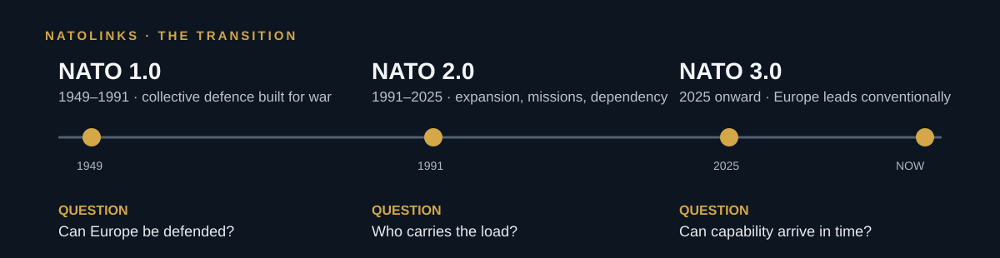

NATO 1.0 · 1949–1991
Collective defence built for war
Cold War deterrence through American power, European national forces, integration and readiness.
The question: can Europe be defended?
A source-led guide to NATO’s founding bargain, the NATO 3.0 debate, and the real-world transition toward a Europe-led conventional defence.
The image is the real event, not illustration: Hegseth and Secretary General Mark Rutte at NATO headquarters in Brussels.
The through-line
It asks whether the Alliance can restore the balance envisioned in its founding treaty: European states building credible capacity while the United States remains a decisive ally—not a permanent substitute for European conventional defence.

NATO 1.0 · 1949–1991
Cold War deterrence through American power, European national forces, integration and readiness.
The question: can Europe be defended?